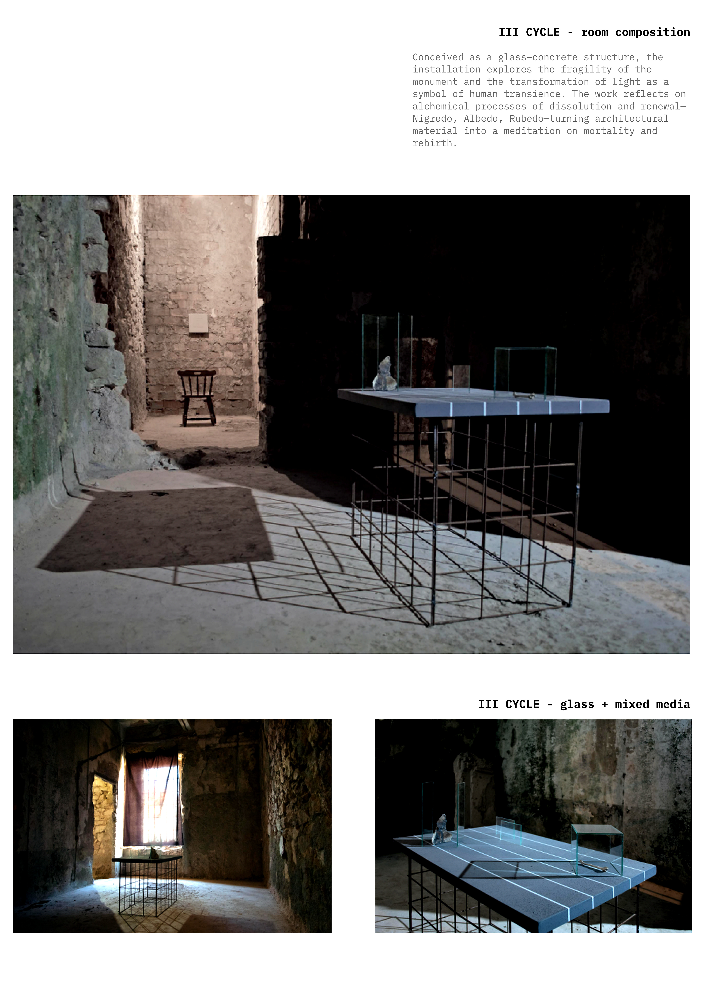

Obelisk is Dead is a spatial installation conceived as a monument to the disappearance of light and the cyclical nature of transformation. The work explores the intersection of architecture, poetry and metaphysics through the symbolic dismantling of the obelisk — a recurring architectural archetype associated with permanence, power and transcendence.
Materially reduced to glass, stone and steel, the installation reflects on fragility and rebirth. Its conceptual framework draws on the alchemical stages of Nigredo, Albedo and Rubedo, transforming material change into a spatial narrative of disappearance and renewal.
Vuk Peković
Interactive Multidisciplinary Festival of Contemporary Art and Spatial Practices
Atelje 22, Cetinje, Montenegro

